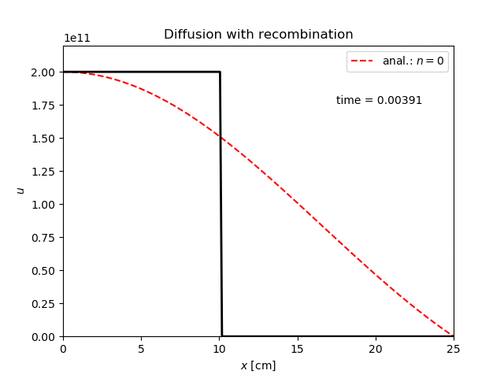

Difuznu rovnicu s rekombinaciou semi-diskretizujem ako:
\[\begin{equation} \frac{\rm{d} u_i}{\rm{d} t} = D_{\rm{a}} \left( \frac{2}{x_i} \frac{u_{i+1} - u_{i-1}}{2 \Delta x} + \frac{u_{i-1} - 2 u_i + u_{i+1}}{\Delta x^2} \right) - \alpha u_i^2 \end{equation}\]
co je sustava ODR, ktore je mozne numericky integrovat.
V strede nadoby (\(i = 0\)) davam okrajovu podmienku symetrie, na okraji domeny (\(i = N\)) predpokladam stenu nadoby, na ktorej iony a elektrony rekombinuju instantne - koncentraciu davam nulovu. Prva okrajova podmienka je Neumann-ovho typu - derivacia je nulova, druha je Dirichletova.
To sa prejavi v diskretizacii nasledovnym sposobom:
\[\begin{gather} 0 = \frac{\partial u}{\partial x} \lvert_{x=0} \approx \frac{u_{-1} - u_{1}}{\Delta x} \qquad \rightarrow \qquad u_{1} = u_{-1} \qquad \rightarrow \nonumber \\ \frac{u_{-1} - 2 u_0 + u_{1}}{\Delta x^2} = \frac{-2 u_0 + 2 u_{1}}{\Delta x^2} \\ \lim_{x \rightarrow 0} \frac{2}{x} \frac{\partial u}{\partial x} = \lim_{x \rightarrow 0} \frac{2 \partial^2 u}{\partial x^2} \approx \frac{2 u_{-1} - 4 u_0 + 2 u_{1}}{\Delta x^2} = \frac{-4 u_0 + 4 u_{1}}{\Delta x^2} \\ \frac{\rm{d} u_0}{\rm{d} t} = D_{\rm{a}} \frac{-6 u_0 + 6 u_{1}}{\Delta x^2} - \alpha u_0^2 \end{gather}\]
Pre opacny koniec: \[\begin{gather} \frac{\rm{d} u_{N-1}}{\rm{d} t} = D_{\rm{a}} \left( \frac{u_{N-2} - 2 u_{N-1}}{\Delta x^2} + \frac{u_{N-2}}{x_{N-1} \Delta x} \right) - \alpha u_{N-1}^2 \end{gather}\]
V gulovej geometrii by som ocakaval riesenie v sferickych Besselovych funckciach. Nulty mod by odpovedal funkcii \(\frac{\sin x}{x}\).
